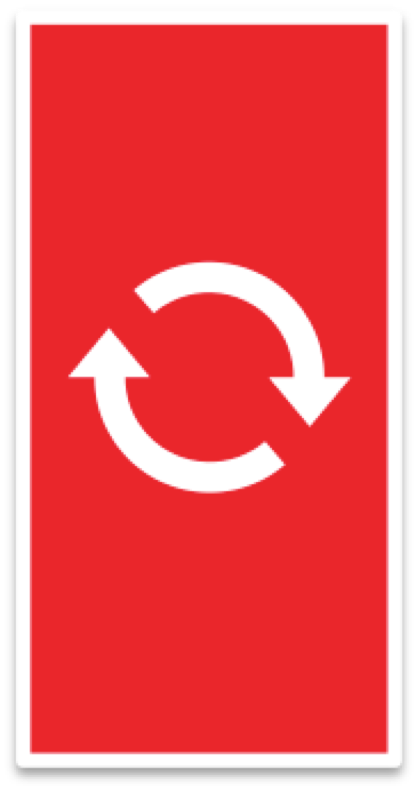

Couchbase Mobile Overview
When designing mobile apps, most developers start with the assumption that the network is available and online. In the real world, this is not always true. When the network inevitably degrades, the app's user experience will begin to suffer. Data availability is actually a key feature for a rich user experience. Apps which suffer from these kinds of problems hover at the bottom of the reviews with one or two star ratings. Couchbase Mobile is our solution to giving your app's users a great experience. Couchbase Mobile is the always available, online and offline database for your apps.
As an app developer, you interact with data in a natural way through JSON documents in a local database. When your app needs to monitor for changes, it can. When your app needs to sync with other apps, it can do that too with only a few additional lines of code. This complex process is abstracted away completely by Couchbase Mobile but you still decide how, what and where data is stored.
Couchbase Mobile is comprised of two core products. Couchbase Lite and Sync Gateway.
Couchbase Lite
 Couchbase Lite is the database that runs on the device, in your application, with a very small footprint. Having a mobile database allows for your users to interact with your mobile app quickly. Couchbase is document oriented with a MapReduce query engine, a suite of events for change notifications and built in sync.
Couchbase Lite is the database that runs on the device, in your application, with a very small footprint. Having a mobile database allows for your users to interact with your mobile app quickly. Couchbase is document oriented with a MapReduce query engine, a suite of events for change notifications and built in sync.
Document Oriented
As a document oriented database, you will tend to use the kind of data structure that you are already using in your applications instead of working with data structured into tables with relationships which needs to be managed through a layer of code doing object-relational mapping. Couchbase Lite gives you as an iOS, Android, Xamarin or Unity developer the kind of interface you would expect in your application code. The results are automatically serialized to an internal representation in JSON. This allows you the developer to code fast and run fast.
Native Query
Querying data in your application using Couchbase Lite is similarly easy. MapReduce indexes are built in the language native to your platform. Since this is done incrementally as data is changed and index results are persisted to local storage, queries are lightening fast. These are also in your platform's native language, making it simple to express the kind of query you want to find data for your user.
Change Notifications
Change notifications in Couchbase Lite let your applications set up platform native methods of listening or observing when things change. This can be done at the database, query or even the document level. Since it is built in to Couchbase Lite, your application code will no longer have a ton of cruft code to be looking for changes. You simply teach your application how to deal with changes in data and then walk away.
Sync
Sync will eventually be needed since any interesting app will probably not be an island of data unto itself. Full multi-master replication is built in to Couchbase Lite. Documents are automatically versioned and if you and a collaborator use the app in such a way that both of you modify the same document in a conflicting way, the application can easily handle it. Remember those change notifications? They can let your app react to data changed from a sync.
Learn more about what working with Couchbase Lite would be like with your mobile app by exploring the Couchbase Lite Overview.
Sync Gateway
Sync Gateway lives on the edge between your private data and the pubic cloud. As you might imagine, its role is handing a number of the normal edge processing related things like Authentication and Authorization. It goes one step further by giving you a way to perform data orchestration.
Authentication and Authorization
Sync is set up in your app from Couchbase Lite to Sync Gateway. At Sync Gateway, the identity of the user is validated using built-in authentication like Facebook Login or with custom authentication. Sync Gateway can then enforce authorization, like ensuring the user modifying the document is a member of a particular Role or is the user who had initially created the document.
Data Orchestration
You will likely need to segment the data, since not all of the data belongs on every user's mobile device. Sync Gateway gives us this ability to perform data orchestration through a concept called channels. Combined with user authentication or role membership, channels give you the developer a simple and flexible way to route the database embedded in the app on the device.
All of your private data is stored by the highly scalable Couchbase Server.
Learn about what Sync Gateway is in more detail in the 'What is Sync Gateway' section.